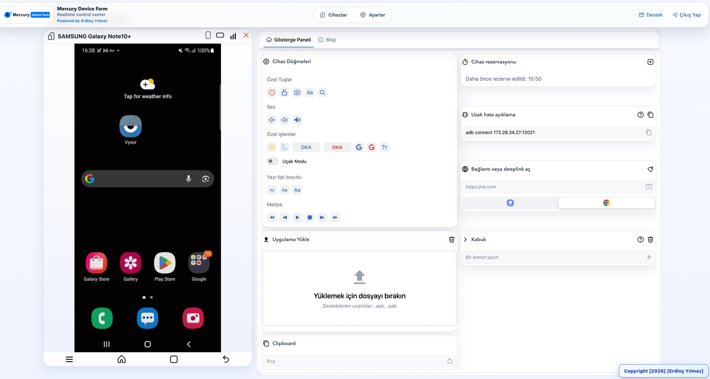
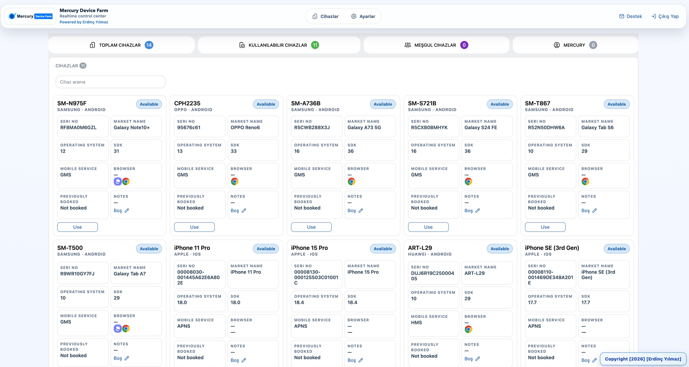
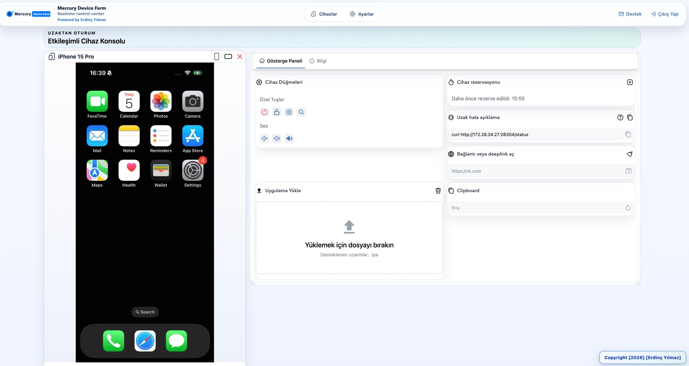
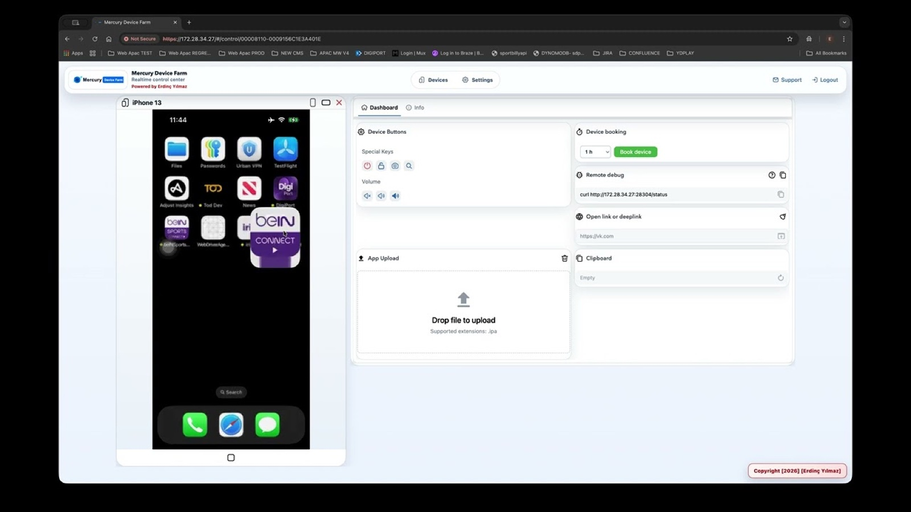

Android kontrol yüzeyi
Bağlı Android cihazın canlı ekranını tarayıcıya taşıyın; ekiplerin uzaktan inceleme ve manuel test akışlarını tek oturumdan yürütmesini sağlayın.

Self-hosted real-device lab
Android, iOS ve Tizen cihazlarınızı tek tarayıcıdan yönetin.
Gerçek cihazları ekibinizle paylaşın, canlı kontrol edin ve Appium ya da Automation API üzerinden paralel test akışlarına bağlayın.
Ürün deneyimi
Ekibiniz bağlı cihazları ortak bir envanterde görür, uygun cihazı açar ve fiziksel olarak başında olmadan gerçek ekranla etkileşir.

Bağlı Android cihazın canlı ekranını tarayıcıya taşıyın; ekiplerin uzaktan inceleme ve manuel test akışlarını tek oturumdan yürütmesini sağlayın.

macOS üzerindeki yerel iOS provider ve WebDriverAgent ile iPhone ve iPad cihazlarını aynı tarayıcı deneyimine dahil edin.
Yetenekler
Mercury yalnızca ekran yayınlamaz. Cihaz erişimini, test otomasyonunu ve sürüm operasyonlarını aynı self-hosted sistemde birleştirir.
Android ve iOS cihazlarını tarayıcıdan görüntüleyin ve uzaktan yönetin. Tizen tabanlı Smart TV cihazlarını ayrıntılı sağlayıcı rehberiyle laboratuvara ekleyin.
Mevcut Appium testlerinizi Mercury cihazlarına yönlendirin veya Automation API üzerinden cihazları programatik kullanın. Birden fazla cihazda paralel yürütme akışları kurun.
Backend servisleri ve derlenmiş web arayüzü Docker üzerinde çalışır; iOS provider Xcode araçlarına erişebilmek için macOS host üzerinde kalır. Dinamik domain algılama yerel ağ erişimini sadeleştirir.
Kurucu release arşivini checksum ile doğrular ve Docker imajını değişmez digest ile sabitler. Güncelleme sonrası servis ve UI sağlık kontrolleri başarısız olursa önceki host sürümü ve stack otomatik geri yüklenir.
Cihaz envanteri, canlı kontrol ve yönetim ekranları.
API, kullanıcı erişimi, cihaz durumu ve iş akışları.
ADB, usbmuxd, Xcode ve WebDriverAgent bağlantıları.
Android, iPhone, iPad ve Tizen Smart TV cihazları.
Ürün demosu
Cihaz listesinden uzaktan kontrol deneyimine kadar temel kullanım yolculuğunu kısa ürün demosunda görün.

Dokümantasyon
Başlangıç, mimari, Appium, API, iOS ve sorun giderme dokümanları İngilizce ve Türkçe içeriklerle GitHub'da sürümle birlikte tutulur.
Projenin genel tanıtımı ve hızlı başlangıç.
Tüm rehberlerin listelendiği başlangıç noktası.
İlk kurulum ve temel kullanım adımları.
iOS cihaz sağlayıcı kurulumu ve gereksinimler.
Çoklu cihazda paralel test çalıştırma rehberi.
Appium kurulumu ve yapılandırma adımları.
Appium ile entegrasyon senaryoları.
Otomasyon API'si ile programatik kullanım.
Uç noktalar ve istek/yanıt detayları.
Tizen tabanlı Smart TV detaylı rehberi.
Sistem mimarisi (EN). TR için: mimari.md.
Sık karşılaşılan sorunlar ve çözümleri.
GitHub Release kurulumu
Public kurulum, host araçlarını release paketinden getirir ve aynı sürüme ait derlenmiş backend ile web UI imajını GHCR üzerinden kullanır.
# 1) macOS gereksinimleri
brew install --cask docker
brew install --cask android-platform-tools
brew install node
brew install libimobiledevice usbmuxd
xcode-select --install
# 2) Son kararlı release'i kur ve başlat
curl -fsSL https://github.com/erdncyz/mercury-farm/releases/latest/download/install.sh | bash
~/.mercury-farm/mercury up
# 3) iOS için WDA'yı bir kez imzala ve provider'ı kur
open ~/.mercury-farm/current/WebDriverAgent/WebDriverAgent.xcodeproj
~/.mercury-farm/mercury ios-auto
~/.mercury-farm/mercury status# 1) Android gereksinimleri
brew install --cask docker
brew install --cask android-platform-tools
# 2) iOS bileşenleri olmadan kur
curl -fsSL https://github.com/erdncyz/mercury-farm/releases/latest/download/install.sh | bash -s -- --android-only
# 3) Başlat ve doğrula
~/.mercury-farm/mercury up
~/.mercury-farm/mercury status
# Arayüz: https://<MERCURY_DOMAIN>Docker Desktop'i açıp tamamen başlamasını bekleyin. iOS kullanıyorsanız Xcode'u da en az bir kez açıp ilk kurulumu tamamlayın.
WebDriverAgentRunner target'ında Automatically manage signing seçeneğini açıp Team belirleyin. Her zaman ~/.mercury-farm/current altındaki projeyi düzenleyin.
mercury status çıktısındaki domain veya IP ile https://<MERCURY_DOMAIN> adresini açın.
mercury updateHost araçlarını, backend'i ve UI'yi birlikte yeniler; ayarlar ile MongoDB volume korunur.
--version vX.Y.ZKurucuyu belirli bir release sürümüyle çalıştırıp kontrollü şekilde önceki pakete dönün.
status / logsServis sağlığını doğrulayın veya merkezi log akışını doğrudan CLI üzerinden izleyin.
Kendi altyapın, gerçek cihazların
Backend ve CLI Apache 2.0 lisanslıdır. Derlenmiş web arayüzü release imajıyla gelir; UI kaynak kodu özel ve yetkili erişime açıktır.